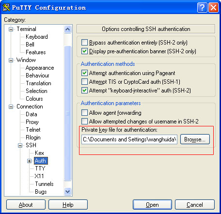

{kind=link}
{kind=link}
{kind=link}
一次配置 终生受益
Vagrant 让这些成为过去
Why Vagrant
简化开发环境安装配置过程，开发环境与代码隔离,只需3部，几分钟之内即可完成开发环境的配置。
开发者可以尝试和测试开发环境的配置变化，如果他们有需要的话。
开发者可以尝试和测试开发环境的配置变化，如果他们有需要的话。
开发者无需担心复杂的基础环境的配置，有的时候甚至是透明的。
Install For Linux
-
安装git
$ yum install curl-devel
$ wget http://git-core.googlecode.com/files/git-1.7.7.tar.gz
$ tar -zxvf git-1.7.7.tar.gz && cd git-1.7.7
$ ./configure
$ make && make install
安装Ruby$ wget ftp://ftp.ruby-lang.org//pub/ruby/1.9/ruby-1.9.2-p0.tar.gz
$ tar -zxvf ruby-1.9.2-p0.tar.gz
$ cd ruby-1.9.2-p0
$ ./configure
$ make && make install
安装RubyGems$ wget http://production.cf.rubygems.org/rubygems/rubygems-1.8.10.tgz
$ unzip rubygems-1.8.10.tgz
$ tar -zxvf rubygems-1.8.10.tgz
$ cd rubygems-1.8.10
$ ruby setup.rb
安装VirtualBox$ getconf WORD_BIT
$ getconf LONG_BIT //查看系统位数
$ https://www.virtualbox.org/wiki/Downloads //下载相应版本VirtualBox
$ rpm -ivh 安装
安装Vagrant$ gem install vagrant
添加默认Box$ vagrant box add test lucid32.box //box模板可以从http://www.vagrantbox.es 下载
$ vagrant box list //查看添加的box
$ cd /yourprojectroom/
$ vagrant init test
$ vagrant up
Install For Windows
-
安装virtualbox
下载VirtualBox，一路next安装
安装vagrant下载Vagrant，一路next安装
安装git下载Git，一路next安装
安装putty下载Putty，解压后使用
下载vagrant的box下载lucid32.box
启动vagrant虚拟机打开Git进入cygwin
$ mkdir /c/test
$ cd /c/test
$ vagrant box add test lucid32.box
#lucid32.box的路径要正确
$ vagrant init
#初始化后在该目录生成配置文件Vagrantfile
$ vagrant up
#启动Vagrant虚拟机，需要一段较长的时间，请耐心等待
ssh登陆虚拟机#进入解压后的putty，运行puttygen.exe，点击load选择私钥，点击save private key生成putty版的私钥
#默认vagrant的私钥在C:\Documents and Settings\用户名\.vagrant.d\insecure_private_key
运行putty.exe配置主机,端口
配置私钥后，点击open连接
Create Box & Use It
-
创建box
$ vagrant package //打包出来的box文件可以重命名为你想要的文件(假设这里为app.box),之后的其他开发者就无需再重建一套开发环境了，直接使用这个box文件即可
使用box$ vagrant add app app.box
$ cd /app/
$ vagrant init app
$ vagrant up//如此一个开发环境便建立好了,是不是很方便?
Some Packages
Linux:
Windows: